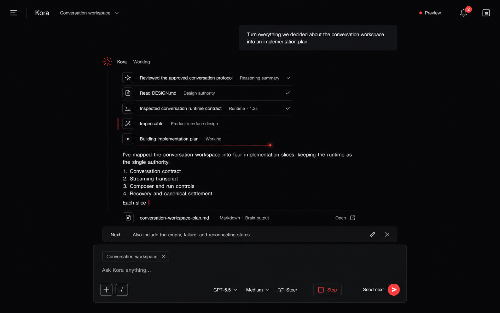

I’m Mobolaji, a Computer Science and Psychology student at UMBC. I design the product, backend, agent runtime, and evaluation loop needed to make ambitious software reliable.
Frederick, MarylandB.S. Computer Science + B.A. PsychologyGraduating May 2027
A local-first assistant that can plan, use tools, retain context, and evaluate its own behavior across real workflows.
Kora / conversation workspace

Evaluation suite
185 scenarios
Retrieval ranking
99.2%
Safety and data failures
0
Problem
Long-running assistants lose context, choose the wrong tools, and become difficult to trust once a task crosses apps or sessions.
Engineering
I extended the Pi agent runtime into a full desktop system with durable memory, browser and app connectors, explicit task state, and evaluation-driven development.
Proof
A 185-scenario benchmark tests retrieval quality, safety, and multi-step behavior. The current suite reaches 99.2% ranking quality with no safety or data-integrity failures.
Running client work across browsers, files, communication tools, and separate AI chats creates fragmented context and repeated coordination.
Engineering
I built a full-stack desktop workflow around company workspaces, durable business state, native connectors, and an agent that can complete operational work—not merely discuss it.
Proof
A month-long synthetic business simulation exercised three companies and fifteen operational checkpoints, with repeatable fixtures for regression testing.
An offline evaluation environment for long-horizon agents, designed to expose failure modes before expensive live runs.
offline evaluation / run 047511 tests passing
01Initialize worldfixture loaded
02Execute agent actionsstate checkpointed
03Fork and replaybranch compared
04Score behavior18 dimensions
Offline tests
511 passing
Evaluator
18 dimensions
Runtime control
Pause · replay · fork
Problem
Long-horizon agent behavior is costly to test live and difficult to reproduce after the environment changes.
Engineering
I designed an offline mechanics baseline with deterministic fixtures, checkpointing, pause and resume, cancellation, linked forks, and replayable traces.
Status
The offline baseline passes 511 tests. An eighteen-dimension evaluator is the next layer for comparing agent decisions and system behavior.
GitHub profile ↗Python · Simulation · Evaluation · Test infrastructure
Commercial work
Kora Studio
I started a software studio to learn the complete loop: finding a real problem, shipping the system, and owning the result.
Co-built a Flask and React record-mapping tool and an NLP pipeline that mapped document descriptions to retention codes with over 80% top-1 accuracy.
2025JuneBrain
Software Engineering Intern
Built an OpenCV pupil-localization and gaze-quality pipeline for ophthalmic imaging, working under mentorship across multi-camera inputs and model evaluation.
2024—NowUMBC DAMS Lab
Undergraduate Researcher
Helped build a privacy-policy analysis pipeline whose prompt-optimization loop improved classification F1 from 0.42 to 0.71 across 500 gold-labeled examples.